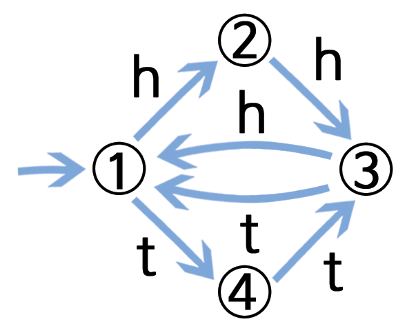

보물 찾기
유한상태 오토마타
개요
컴퓨터 프로그램이 문서안에서 문자나 단어, 혹은 다른 컴퓨터 프로그램의 텍스트 같은 기호 순서(sequence)를 종종 처리할 필요가 있다. 컴퓨터 과학자는 이런 작업을 처리하기 위해서 유한상태 오토마타를 사용합니다. “기호는 문서 안의 문자나 단어 또는 프로그램 문장”, “정수는 0~ 9까지 숫자가 늘어선 것”, “실수는 일정 숫자 순서 뒤에 > 소수점이 1개 있고 다시 숫자가 늘어선 것” 같이 단어나 기호 문자열을 컴퓨터가 인식해야 합니다. 유한상태 오토마타는 명령어 집합을 따라서 컴퓨터가 단어나 기호 문자열을 인식하는지 확인합니다. 유한상태 오토마타에 상응하는 보물지도를 사용하여 활동을 수행합니다.
교과학습 연계
- 수학 : 논리와 추론 개발하기 — 패턴을 기술하고 이어가는 단어나 기호 사용하기
- 사회 연구
- 영어/국어
기술
- 간단한 독도법(지도 읽기)
- 패턴 인식
- 논리
- 명령 이해하기
나이
- 9세 이상
학습 교재
- 선생님이 필요한 것
- 섬 카드 한 세트 (지도를 그리려는 아이들에게 지침이 노출되지 않도록 주의하세요.)
복사 마스터: 섬 카드 복사해서 자르기 점선을 따라 접고 카드의 앞면에는 섬의 이름이 뒷면에는 명령이 되도록 풀칠한다.
- 섬 카드 한 세트 (지도를 그리려는 아이들에게 지침이 노출되지 않도록 주의하세요.)
- 아아마다 필요한 것
- 워크시트 활동: 보물섬에 보물로 가는 길을 찾으세요.
- 펜 또는 연필
- 선택적으로 발전학습을 위해, 아이마다 필요한 것
- 워크시트 활동: 보물섬
- 워크시트 활동: 수수께끼 동전 게임
언플러그드 활동 동영상
| 한글 동영상 | 영어 동영상 |
|---|---|
보물섬
들어가며
이번 여정의 목표는 보물섬을 찾는 것입니다. 우호적인 해적선은 여행자를 태우고, 섬 사이를 정해진 항로로만 항해합니다. 각 섬에는 여러분이 선택할 수 있는 두 대의 배 > A,B가 있습니다. 보물섬으로 가는 가장 좋은 항로를 찾아보세요. 섬에 도착하면 A, B 선박에 승선을 요청할 수 있지만, 두 배 모두를 선택할 수는 없습니다. 섬에 있는 사람은 배가 다음에 어느 섬으로 항해할 것인지를 말해 줄 수는 있지만, 해적들이 모든 섬의 지도를 가지고 있지 않습니다. 자신만의 지도를 사용하여 어느 배를 타고, 어느 섬으로 항해했는지 기록하세요.
시연
(주목: 아래 지도는 실제 활동에 사용되는 것과 다른 지도입니다.)
슬라이드 혹은 칠판에 아래처럼 3개의 섬으로 이루어진 그림을 그리세요:

다음 두 페이지에 있는 3장의 카드를 복사해서 아이들이 카드를 1장씩 갖게 합니다. 3장의 카드는 실제 활동에서 사용되는 것과 다르다는 것을 알려줍니다.
해적섬에서 시작해서 배A를 선택합니다. 해적섬 카드를 가진 아이는 배A를 난파만을 목적지로 이동합니다. 지도에 그 경로를 기록합니다. 난파만에서 다시 배A를 선택합니다. 아이는 다시 해적섬으로 배의 진로를 말합니다. 지도에 이것을 기록합니다. 이번에는 배B를 선택합니다. 지도에 표시합니다. 이 경로가 선택하게 되면, ’망자의 섬’으로 가서, 꼼짝할 수 없이 갇히게 됩니다.
최종지도는 다음과 같습니다:

시연 활동을 위한 카드

활동
섬 역할을 수행할 아이 7명을 선택합니다. 아이들은 뒷면에 비밀 명령이 있는 섬 카드를 지니고 있습니다. 교실 내부나 실외에서 적절한 공간에 무작위로 아이들을 배치하세요> . 나머지 아이들은 공백 지도를 가지고 해적섬에서 보물섬으로 가는 항로를 지도에 표시하면서 항해할 것입니다. (보물섬에 갈 아이는 한 번에 한 명만 한정하여 미리 > 목적지를 듣고 못하도록 하는 것이 좋습니다.)
빨리 끝난 아이: 다른 경로를 찾아보세요.
완성된 지도는 아래와 같을 것입니다.

후속 토론
가장 빠른 항로는 무엇입니까?
매우 느린 항로는 무엇입니까?
몇몇 항로는 반복(loop)을 포함한 항로도 있습니다.
반복을 포함한 항로의 예를 보여줄 수 있습니까?
보물섬에 도착하는 항로의 예를 보여줄 수 있나요? (예를 들어, 항로 BBBABAB과 BBBABBABAB 모두 보물섬에 도착합니다)
컴퓨터 과학 핵심 개념
컴퓨터 과학에서 컴퓨터가 문자나 이벤트 순서(sequence)를 처리하려고 유한상태 오토마타(finite-state automata)를 사용합니다.
가장 간단 사례로 전화 자동응답 서비스가 있습니다. 전화를 걸면 자동응답 시스템에서 “무슨 서비스를 원한다면… 1번, 다른 무언가를 원한다면 … 2번, 상담원과 직접 통화를 원하시면 3번 버튼을 누르십시오”라는 메시지를 들을 수 있습니다. 전화 숫자 버튼을 누르는 것은 전화 저편에 있는 컴퓨터 유한상태 오토마타에 입력을 주는 것입니다 . 컴퓨터와 대화는 간단할 수도, 매우 복잡할 수도 있습니다. 유한상태 오토마타에는 특유의 무한반복이 존재하기 때문에, 계속해서 동일한 대화를 반복하게 됩니다. 만약 이런 일이 발생한다면, 분명한 시스템 설계에 오류가 있으며, 전화를 거신 여러분은 분명 매우 당황스러울 것입니다.
또 다른 사례는 현금 자동인출기계에서 현금을 인출하는 경우입니다. 현금 자동인출기계 프로그램은 여러분들로 하여금 이벤트 순서를 발생시킬 것입니다. 프로그램 내부에, 모든 가능한 순서가 유한-상태 오토마타로 표현되어 있습니다. 사용자가 키를 누를 때마다 다음 상태로 자동적으로 이동하게 됩니다. 몇몇 상태는 컴퓨터에 지시사항을 담고 있습니다. 예를 들어, “현금 만원을 지불하세요”, “명세표를 출력하세요”, “현금카드를 꺼내세요”.
몇몇 컴퓨터 프로그램은 워크쉬트 보물섬 같은 지도를 사용하여 국어나 영어 문장을 정말 잘 다룹니다. 이들 컴퓨터는 문장을 잘 만들어 낼 뿐 아니라 사용자가 입력하는 문장을 잘 처리하기도 합니다. 1960년대 컴퓨터 과학자가 사람과 대화하는 “Eliza”, 후에 “Eliza Dolittle”라는 프로그램을 만들었습니다. 영화 ’마이 페어 레이디’에서 오드리 헵번이 연기한 꽃 파는 소녀 이름이기도 합니다. 이 프로그램은 마치 자신이 심리치료 전문가처럼 행사하며 “여러분의 가족에 대해서 알려주세요”, “아무쪼록 계속하십시오” 같이 대화를 이끌어 가는 질문을 곧잘 했다. 사실 이 컴퓨터는 아무것도 이해를 하지 못하지만, 그럴듯하게 보였고, 몇몇 사람은 자신이 사람 심리치료 전문가와 대화하고 있다고 생각하기도 했습니다.
컴퓨터가 자연어를 이해하는 데는 서투르지만, 인공언어를 처리하는 것은 꽤 잘 합니다. 프로그래밍 언어는 중요한 인공언어 중 하나입니다. 컴퓨터는 유한상태 오토마타를 사용하여 프로그램을 읽어서 컴퓨터가 “실행할”" 수 있는 컴퓨터 명령어로 변환합니다.
해답과 힌트
수수께끼 동전 게임 (103페이지)
수수께끼 동전 게임은 동전을 던질 때마다 다음 지도를 사용합니다.

이 지도를 따라가면, 동전을 세번 던질 때마다 처음 두번은 필히 같은 면을 가지는 것을 알 수 있다.